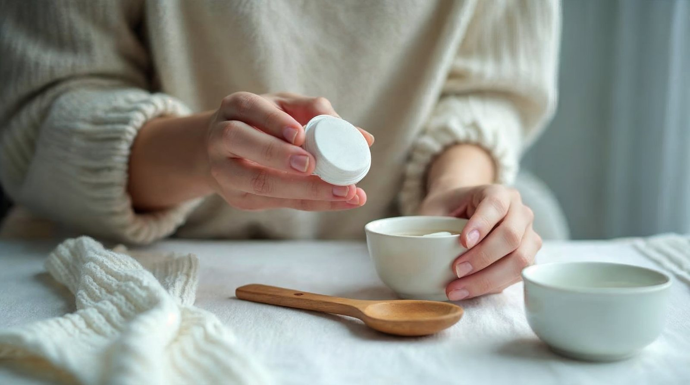
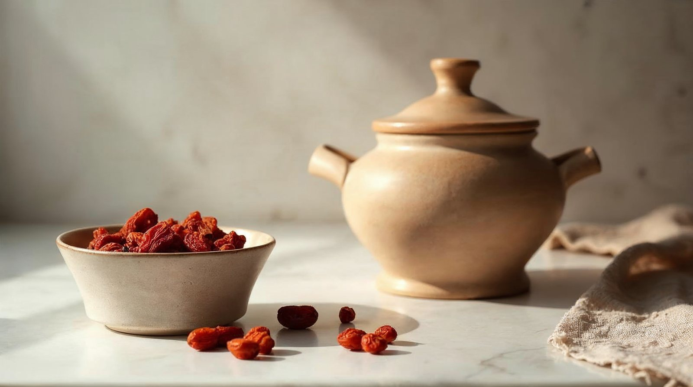
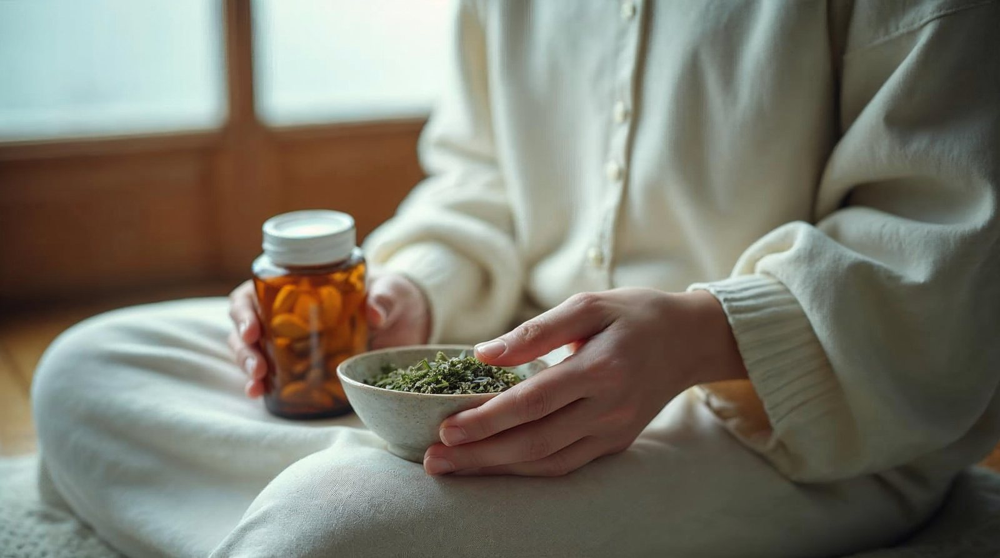
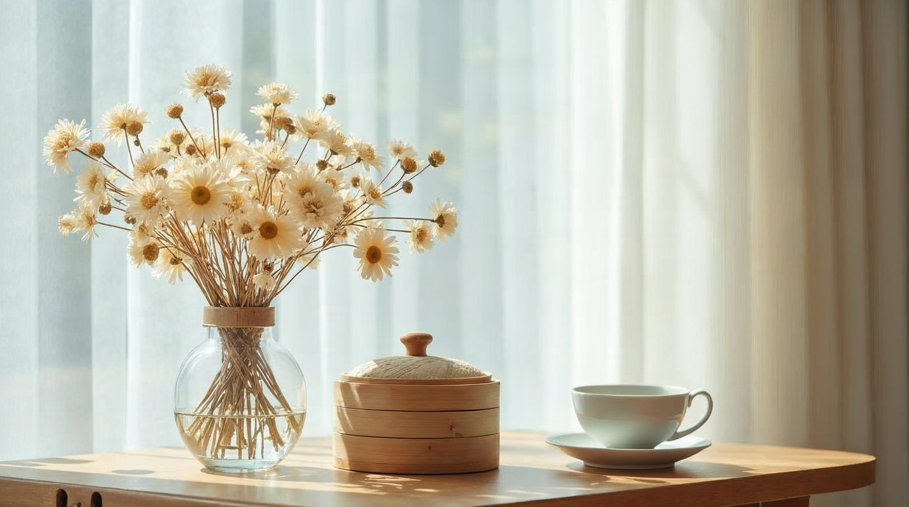
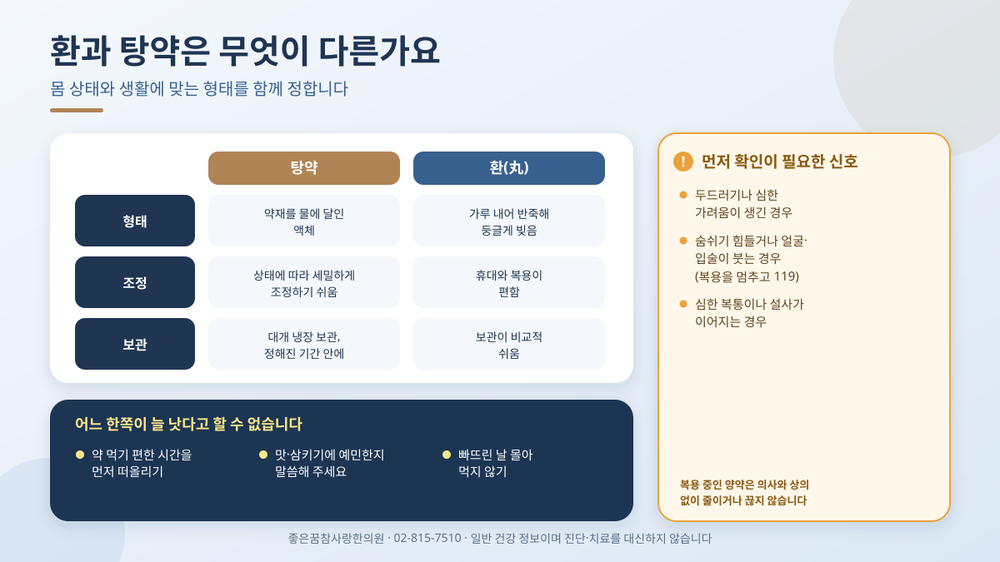

이종호 한의사 감수좋은꿈참사랑한의원 대표원장 (한의사 면허번호 19769)발행 2026-11-23 · 수정 2026-11-27
이 글의 차례
- 탕약
- 환
- 왜 형태를 함께 고르면 좋을까요
- 먼저 이렇게 여쭙니다
- 상황별 예시
- 스스로 점검해 보세요
- 일상에서 먼저 해 볼 수 있는 것
- 어느 쪽을 고르나요
- 얼마나 지켜보고 언제 상담할까요
- 산과 고는 어떤 형태인가요?
- 왜 탕약은 처방을 바꾸기 쉬울까요
- 복용 시각을 생활에 붙이는 요령
- 형태를 바꾸고 싶을 때는 이렇게 말씀해 주세요
- 형태보다 먼저인 것
- 탕약을 데워 드실 때
- 환을 보관할 때
- 맛이 부담스러울 때 해 볼 수 있는 것
- 여행 갈 때 형태별로 챙기기
- 같은 처방을 형태만 바꿀 수 있나요?
- 아이와 어르신은 무엇을 더 살피나요?
- 처음 드시는 분께 권하는 순서
- 남은 약은 어떻게 하나요?
- 한의원에서 함께 살필 수 있는 경우
- 이렇게 기록해 오시면 상담이 쉬워집니다
- 이런 증상은 먼저 확인이 필요합니다
- 함께 읽으면 좋은 글
한약은 형태에 따라 크게 탕약, 환, 산, 고 등으로 나뉘어요. 이 가운데 자주 마주치는 탕약과 환을 비교해 볼게요. 진료실에서 "어느 쪽이 더 좋아요?"라는 질문을 자주 받는데, 어느 한쪽이 늘 맞는다기보다 지금 몸 상태와 처방 목적, 하루 생활에 맞는 형태를 진찰 후 함께 고르는 거예요.
처방과 형태는 다른 얘기예요. 처방은 몸을 보고 정하고, 형태는 그 처방을 하루 생활 속에서 어떻게 꾸준히 드실지를 보고 정하거든요. 아무리 잘 맞는 약도 챙겨 드시기 어려우면 서랍 속에 남게 되니까요. 같은 분이라도 몸 상태나 생활이 달라지면 형태를 다시 상의하기도 합니다.
탕약
- 약재를 물에 달여 액체로 마십니다.
- 처방을 상태에 따라 세밀하게 조정하기 쉽습니다.
- 대개 냉장 보관이 필요하고 정해진 기간 안에 드셔야 합니다.
- 파우치에 나누어 담겨 있으며, 한 번에 드실 양과 데워 드실지는 처방에 따라 받을 때 안내해 드립니다.
환
- 약재를 곱게 가루 내어 꿀 등으로 반죽해 둥글게 빚습니다.
- 휴대와 복용이 편하고 보관이 비교적 쉽습니다.
- 씹어 먹거나 물과 함께 먹으며 맛과 질감이 탕약과 다릅니다.
- 미리 빚어 두는 형태라 드시는 중간에 구성을 바꾸기는 탕약보다 어려운 편입니다.

왜 형태를 함께 고르면 좋을까요
한약을 드시다 그만두게 되는 이유는 약보다 생활에 있을 때가 많습니다.
- 출퇴근과 수업으로 하루 두세 번 챙겨 먹기 어려운 경우
- 탕약의 맛과 향, 양이 부담스러운 경우
- 위장이 예민해 공복에 먹으면 속이 불편한 경우
- 보관을 잘못해 맛이 변한 경우
- 출장이나 여행이 잦아 냉장 보관이 어려운 경우
그래서 형태는 처방을 정할 때 함께 상의합니다. 약이 몸에 맞는지와 더불어, 정해진 기간 동안 무리 없이 챙겨 드실 수 있는지도 같이 봅니다.

먼저 이렇게 여쭙니다
- 하루 중 약을 챙겨 드시기 편한 시간은 언제인가요?
- 맛이나 삼키는 것에 예민한 편인가요?
- 예전에 한약을 드시고 불편했던 적이 있나요?
- 복용 중인 다른 약이 있나요?
- 간 질환이 있거나, 임신 중이거나 임신 가능성이 있나요?
- 출장이나 여행처럼 냉장 보관이 어려운 일정이 있나요?
- 공복에 무언가 드시면 속이 쓰리거나 더부룩한 편인가요?
상황별 예시
- 예를 들어 출퇴근이 길고 점심을 밖에서 드시는 직장인이라면, 하루 중 한 번을 회사에서 어떻게 챙길지부터 함께 정합니다. 냉장고를 쓰기 어렵다면 그 점을 말씀해 주세요. 형태와 복용 시각을 정할 때 함께 고려합니다.
- 예를 들어 진찰 뒤 한약을 드시게 된 학생이 학교와 학원 사이에 시간이 빠듯하다면, 맛과 양에 대한 부담, 아침 식사 여부를 함께 여쭙습니다. 보호자가 하루 복용 시각을 달력에 적어 두시면 빠뜨리는 날을 줄이는 데 도움이 됩니다.
- 예를 들어 삼키는 것이 불편하거나 위장이 예민한 어르신이라면, 환의 크기와 개수, 탕약의 양 가운데 어느 쪽이 부담이 덜한지 진료 때 말씀해 주세요. 드시는 다른 약과의 시간 간격도 함께 정합니다.
스스로 점검해 보세요
- 하루 두세 번 같은 시각에 약을 챙기기 어렵다
- 쓴맛이나 한약 향에 예민한 편이다
- 알약이나 작은 알갱이를 삼키기 힘들다
- 공복에 먹으면 속이 쓰리거나 더부룩하다
- 출장·여행이 잦아 냉장 보관이 어렵다
- 예전에 한약을 먹다 중간에 그만둔 적이 있다
해당하는 항목이 있으면 진료 때 말씀해 주세요. 처방과 함께 형태를 정하는 데 참고합니다.
일상에서 먼저 해 볼 수 있는 것
- 하루 생활 시간표를 떠올려 약 먹을 시각을 미리 정하기
- 탕약은 받으면 바로 냉장 보관하기
- 맛이 부담스러우면 처방받은 곳에 복용 방법을 먼저 묻기
- 빠뜨린 날은 임의로 몰아 먹지 않기
- 환은 습기가 적고 햇빛이 들지 않는 곳에 두고, 받을 때 안내받은 보관법 따르기

어느 쪽을 고르나요
둘 중 한쪽이 늘 맞는다고 말할 수는 없습니다.
- 매일 달인 약을 챙기기 어려운 분은 환이 편할 수 있습니다.
- 증상이 자주 달라져 처방 조정이 필요하다면 탕약이 맞을 수 있습니다.
- 위장이 약한 분은 형태에 따라 불편함이 다를 수 있어 미리 말씀해 주세요.
- 소화가 약하거나 몸 상태가 자주 바뀌는 시기에는 처방을 먼저 맞춰 본 뒤 형태를 다시 상의하는 경우가 있습니다.
얼마나 지켜보고 언제 상담할까요
형태를 정해 드시기 시작하면 첫 1~2주 동안 빠뜨린 횟수와 속이 편한지, 대변이 어떤지 적어 두세요. 일주일에 두 번 넘게 빠뜨리게 되거나 맛과 양 때문에 드시기가 계속 힘들다면 참지 말고 전화로 알려 주세요. 형태나 복용 시각을 다시 상의할 수 있습니다.
속이 조금 더부룩한 정도라면 이삼일 지켜보며 적어 두되, 사흘 넘게 이어지면 다음 진료를 기다리지 말고 연락해 주세요. 두드러기가 생기면 바로 복용을 멈추고 연락해 주시고, 숨이 차거나 얼굴·입술이 부으면 가까운 응급실로 가세요.
산과 고는 어떤 형태인가요?
탕약과 환 말고도 한약에는 산(散)과 고(膏) 같은 형태가 있습니다. 산은 약재를 가루로 만든 형태이고, 고는 약재를 오래 달여 진하게 졸인 형태를 말합니다.
형태마다 만드는 방법과 드시는 방법, 보관이 다릅니다. 어떤 형태가 맞는지는 처방 목적과 몸 상태, 생활을 함께 보고 정하므로, 다른 형태가 궁금하시면 진료 때 편하게 여쭤 주세요.
왜 탕약은 처방을 바꾸기 쉬울까요
탕약은 처방이 정해질 때마다 약재를 새로 계량해 달입니다. 그래서 지난번에 속이 무거웠다면 그 부분을 덜고, 잠이 여전히 얕다면 그쪽을 더 살피는 식으로 다음 처방에 바로 반영하기 쉽습니다.
환은 미리 빚어 두는 형태라 한 번 만들면 구성이 정해져 있습니다. 대신 들고 다니기 쉽고 보관이 비교적 편합니다. 저는 이 차이를 지금 필요한 것이 세밀한 조정인지, 꾸준히 챙기기 쉬운 것인지의 차이로 설명드립니다.
복용 시각을 생활에 붙이는 요령
한약을 빠뜨리는 이유를 들어 보면, 먹을 마음은 있는데 그 시각에 다른 일에 쫓기는 경우가 대부분입니다. 그래서 새로운 시각을 외우기보다 이미 매일 하는 일에 붙여 두기를 권합니다.
- 아침 양치를 마치면 바로 정해진 양 챙기기
- 점심 한 번은 회사 책상이나 가방의 정해 둔 자리에 두기
- 저녁은 설거지를 마친 뒤나 잠옷으로 갈아입은 뒤로 정하기
- 식사와의 간격은 받을 때 안내받은 대로 지키기
탕약이라면 냉장고 문 쪽 눈에 잘 띄는 칸에, 환이라면 매일 쓰는 물건 옆에 두면 잊는 날이 줄어듭니다.
형태를 바꾸고 싶을 때는 이렇게 말씀해 주세요
드시다가 형태를 바꾸고 싶어지면 그냥 그만두시기보다 이유를 말씀해 주세요. 이유에 따라 형태를 바꾸지 않고도 풀리는 경우가 있습니다.
- 맛이나 향이 힘든지, 양이 많아 힘든지
- 시간을 맞추기 어려운지, 보관이 어려운지
- 먹은 뒤 속이 불편한지, 대변이 달라졌는지
예를 들어 양이 부담이라면 복용 방법을, 시간을 맞추기 어렵다면 복용 시각을 먼저 다시 정해 볼 수 있습니다. 속이 불편하다면 형태보다 처방을 다시 살펴야 할 수도 있어 맥을 다시 짚어 봅니다.
형태보다 먼저인 것
형태를 고르는 일은 중요하지만, 그보다 앞서는 것은 한약이 지금 필요한지에 대한 판단입니다. 진찰 결과 잠이나 식사 같은 생활 조정이 먼저라고 판단되면, 형태를 고르는 단계까지 가지 않고 생활부터 함께 정리하기도 합니다.
탕약을 데워 드실 때
탕약을 데워 드시라고 안내받았다면 전자레인지보다 파우치째 따뜻한 물에 담가 데우는 중탕을 권하는 경우가 많습니다. 끓는 물에 오래 두거나 다시 끓이지 않도록 해 주세요.
손으로 만졌을 때 따뜻하다고 느낄 정도면 충분합니다. 너무 뜨겁게 데우면 오히려 마시기 힘들고 향이 더 강하게 느껴질 수 있습니다. 데우지 않고 드셔도 되는 처방도 있으니 받을 때 안내받은 방법을 따라 주세요.
환을 보관할 때
환은 탕약보다 보관이 편하지만 습기에는 약한 편입니다. 습기를 먹으면 겉이 끈적해지거나 서로 달라붙을 수 있습니다.
- 욕실이나 싱크대 옆처럼 습한 곳은 피하기
- 여름철 차 안이나 햇빛이 드는 창가에 두지 않기
- 뚜껑이나 포장을 꼭 닫아 두기
- 냉장 보관 여부는 받을 때 안내받은 대로 따르기
겉에 하얀 점이 생기거나 냄새가 평소와 다르면 드시지 말고 사진을 찍어 여쭤 주세요.
맛이 부담스러울 때 해 볼 수 있는 것
한약의 맛과 향이 힘들어 형태를 바꾸고 싶어 하시는 분도 있습니다. 형태를 바꾸기 전에 몇 가지를 먼저 해 볼 수 있습니다.
- 너무 뜨겁지 않게, 미지근한 온도로 드셔 보기
- 드신 뒤 바로 물 한 모금으로 입을 헹구기
- 코로 숨을 크게 들이쉬지 않고 한 번에 천천히 마시기
그래도 힘들다면 참고 드시기보다 진료 때 말씀해 주세요. 한약 맛이 써서 먹기 힘들 때는 어떻게 하면 좋을까요? 글에도 요령을 정리해 두었습니다.
여행 갈 때 형태별로 챙기기
여행이나 출장이 잡히면 형태에 따라 준비가 달라집니다. 탕약이라면 숙소의 냉장고와 이동 시간을 먼저 확인하고, 길게 걸리는 이동에는 보냉 가방을 준비해 보세요. 환이라면 습기를 피할 수 있도록 받은 포장 그대로 챙기시면 됩니다.
일정이 길어 챙기기 어렵다면 그 기간은 쉬어 갈지, 일정에 맞춰 형태를 다시 상의할지 미리 말씀해 주세요.
같은 처방을 형태만 바꿀 수 있나요?
탕약으로 드시던 처방을 환으로, 혹은 그 반대로 바꾸고 싶다는 말씀을 듣기도 합니다. 처방의 목적과 구성에 따라 바꾸기 쉬운 경우도 있고, 형태를 바꾸면 처방도 다시 살펴야 하는 경우도 있습니다.
그래서 형태를 바꾸고 싶으시면 지금 드시는 처방이 어떤지, 몸 상태가 처음과 어떻게 달라졌는지 진찰로 다시 확인한 뒤 정합니다. 형태가 바뀌어도 드시는 동안의 기록은 이어서 적어 주세요.
아이와 어르신은 무엇을 더 살피나요?
아이는 쓴맛에 더 예민하고 양이 많으면 끝까지 드시기 어려워해, 하루 양과 횟수를 생활에 맞춰 정하는 일이 중요합니다. 어르신은 삼키는 힘과 드시는 다른 약의 개수, 식사량을 함께 봅니다. 두 경우 모두 보호자가 복용을 챙기실 수 있는 시각을 함께 정해 두면 빠뜨리는 날이 줄어듭니다.
처음 드시는 분께 권하는 순서
한약을 처음 드시는 분이라면 형태를 정하기 전에 하루 생활부터 떠올려 보세요. 아침에 집을 나서는 시각, 점심을 먹는 장소, 저녁에 집에 들어오는 시각을 적어 오시면 약을 챙길 수 있는 시간이 하루에 몇 번인지 바로 보입니다.
그 시간표를 바탕으로 처방을 정한 뒤 형태와 복용 시각을 함께 고르고, 첫 1~2주를 드신 뒤 다시 오셔서 챙겨 드시기가 어땠는지 이야기를 나누는 순서로 진행합니다. 불편한 점은 그때 바로 고쳐 가면 됩니다.
남은 약은 어떻게 하나요?
일정이 바뀌어 약이 남았다면 버리거나 가족에게 나눠 드리기 전에 먼저 여쭤 주세요. 탕약은 보관 기간이 있어 오래 두면 드시기 어렵고, 환이라도 처방은 드실 분을 진찰해 정한 것이라 다른 분께 맞는다고 할 수 없습니다. 남은 개수를 알려 주시면 다음 처방과 이어서 어떻게 할지 함께 정합니다.
한의원에서 함께 살필 수 있는 경우
- 어떤 형태가 내 생활에 맞을지 고민되는 경우
- 탕약을 먹다 속이 불편했던 경험이 있는 경우
- 복용을 자주 빠뜨려 방법을 바꾸고 싶은 경우
좋은꿈참사랑한의원에서는 모든 분의 맥을 먼저 짚고, 몸 상태와 하루 생활을 충분히 들으며 설진·복진으로 살핀 뒤 처방과 함께 맞는 형태를 정합니다. 탕약은 원내에서 달이며, 받는 날 보관법과 복용법을 알려 드립니다.
첫 방문에는 맥부터 짚어 보고, 불편한 점과 하루 생활 시간표, 예전에 드신 한약의 형태와 그때의 경험을 여쭙니다. 필요하다고 판단될 때 혀와 배를 살핀 뒤, 한약이 필요한지와 처방 방향을 정하고 그 처방을 어떤 형태로 드시면 생활에 맞을지 함께 고릅니다. 다시 오시면 약을 챙겨 드시기가 어땠는지부터 이어서 여쭙습니다.

이렇게 기록해 오시면 상담이 쉬워집니다
약을 빠뜨리는 날이 있다고 미안해하실 필요는 없어요. 사람은 원래 그래요. 야근하는 날도 있고 약속이 생기는 날도 있거든요. 오히려 언제, 왜 빠뜨렸는지를 알면 그 생활에 맞는 형태와 시간을 같이 찾을 수 있어요.
- 하루 생활 시간표(약을 챙겨 먹기 편한 시간)
- 예전에 드신 한약의 형태와 그때의 불편
- 삼키기나 맛에 민감한지
- 복용 중인 약과 영양제
- 약을 빠뜨린 날과 그 이유(야근, 외출, 맛 등)
몸에 맞는 처방과 형태를 고르는 건 제가 맡을 테니, 하실 일은 하나예요. 약을 빠뜨린 날에 그 이유를 한 단어로만 적어 주세요. '야근', '외출', '맛'처럼요. 그 한 단어가 다음 상담에서 형태를 고르는 좋은 단서가 돼요.
딴 건 편하게 하셔도 돼요. 탕약이든 환이든, 꾸준히 드실 수 있는 쪽이 지금 나한테 맞는 형태에 가까워요. 고민되는 점은 진료실에서 그냥 편하게 물어보세요.
이런 증상은 먼저 확인이 필요합니다
- 한약을 드신 뒤 두드러기나 심한 가려움이 생긴 경우
- 숨쉬기 힘들거나 얼굴·입술이 붓는 경우(바로 복용을 멈추고 가까운 응급실)
이런 신호가 있으면 한의원보다 가까운 병원이나 응급실을 먼저 찾으세요.
함께 읽으면 좋은 글

여쭙는 것
- 하루 중 약을 챙겨 드시기 편한 시간은 언제인가요?
- 맛이나 삼키는 것에 예민한 편인가요?
- 예전에 한약을 드시고 불편했던 적이 있나요?
생활에서 해 볼 것
- 하루 생활 시간표를 떠올려 약 먹을 시각을 미리 정하기
- 탕약은 받으면 바로 냉장 보관하기
- 맛이 부담스러우면 처방받은 곳에 복용 방법을 먼저 묻기
한의원에서 함께 살필 것
- 어떤 형태가 내 생활에 맞을지 고민되는 경우
- 탕약을 먹다 속이 불편했던 경험이 있는 경우
- 복용을 자주 빠뜨려 방법을 바꾸고 싶은 경우
먼저 확인이 필요한 신호
- 한약을 드신 뒤 두드러기나 심한 가려움이 생긴 경우
- 숨쉬기 힘들거나 얼굴·입술이 붓는 경우(바로 복용을 멈추고 가까운 응급실)
한눈에 보는 표
| 구분 | 핵심 |
|---|---|
| 여쭙는 것 | 하루 중 약을 챙겨 드시기 편한 시간은 언제인가요? 맛이나 삼키는 것에 예민한 편인가요? |
| 생활에서 해 볼 것 | 하루 생활 시간표를 떠올려 약 먹을 시각을 미리 정하기 탕약은 받으면 바로 냉장 보관하기 |
| 한의원에서 함께 살필 것 | 어떤 형태가 내 생활에 맞을지 고민되는 경우 탕약을 먹다 속이 불편했던 경험이 있는 경우 |
| 먼저 확인이 필요한 신호 | 한약을 드신 뒤 두드러기나 심한 가려움이 생긴 경우 숨쉬기 힘들거나 얼굴·입술이 붓는 경우(바로 복용을 멈추고 가까운 응급실) |
자주 묻는 질문
환과 탕약은 쓰임이 정해져 있나요?
그렇게 나누는 것은 정확하지 않습니다. 둘 다 진단에 따라 목적을 정해 처방합니다.
환을 씹지 않고 삼켜도 되나요?
복용 방법은 처방한 한의사의 안내를 따라 주세요.
탕약을 데워 먹어야 하나요?
처방에 따라 다르므로 받을 때 안내하는 방법을 따라 주세요. 전자레인지보다 중탕으로 데우는 것을 권하는 경우가 많습니다.
탕약을 먹다가 환으로 바꿀 수 있나요?
가능한 경우가 있습니다. 몸 상태와 처방 목적, 생활을 다시 살핀 뒤 상의하니, 드시기 어려운 점을 진료 때 편하게 말씀해 주세요.
좋은꿈참사랑한의원은 재진 때 지난번 이야기부터 이어서 여쭙니다. 진료시간과 예약은 오시는 길에서 확인하세요.
어디서 상담받을 수 있나요?
좋은꿈참사랑한의원은 서울 동작구 만양로2길 2 신성빌딩 3층·5층(서울 동작구 상도동, 7호선 상도역 3번 출구 근처)에 있습니다. 한의사 3명(이종호 대표원장, 조영기 수석진료원장, 정원영 진료원장)이 진료합니다. 진료시간은 평일 09:30~20:00(점심 13:00~14:00), 토·일·공휴일 09:30~15:00이며, 방문 전 전화로 확인을 권합니다. 예약은 네이버 예약, 카카오톡 상담, 전화 02-815-7510로 받습니다.
이 글은 일반적인 건강 정보이며 개인의 진단이나 치료를 대신하지 않습니다. 증상이 있거나 복용 중인 약이 있다면 진료를 통해 확인하세요. 치료 효과는 개인마다 다를 수 있습니다.
작성 기준: 일반적으로 알려져 있는 건강 정보를 참고해 정리했습니다(대표원장 감수). 증상 기록은 1~2주 동안 하루 1회, 비슷한 시간에 적어 오시면 지난 상태와 비교하기 쉽습니다.